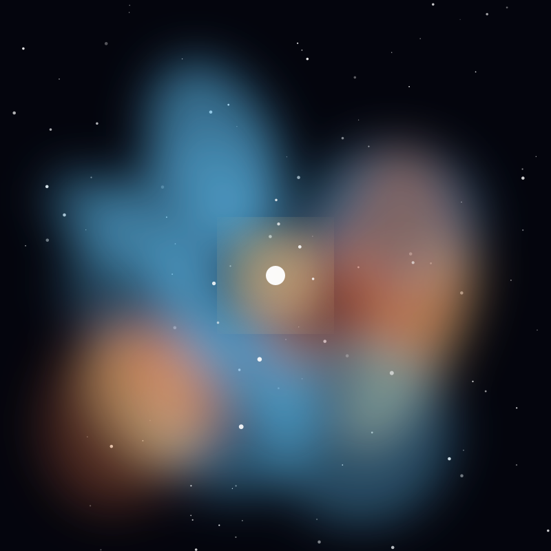

Nebula
Crab Nebula
The shredded remains of a supernova that Chinese astronomers recorded in 1054, now powered by a spinning neutron star.
Object 22 of 26

Key facts
- Distance
- 6,500 light-years
- Radius
- ~5.5 light-years
- Type
- Supernova remnant
- Central object
- Crab Pulsar (30 rotations/second)
- Recorded
- 1054 CE by Chinese astronomers
- Catalogued
- 1758, Charles Messier (M1)
- Constellation
- Taurus
- Expansion speed
- ~1,500 km/s
Overview
The Crab Nebula is the wreckage of a star that exploded as a supernova. Chinese, Japanese and Arab astronomers recorded the 'guest star' of 1054 CE, noting that it was visible in daylight for 23 days and remained bright enough to see at night for nearly two years.
Almost seven centuries later, while hunting for Halley's Comet, Charles Messier found the fuzzy object and made it the first entry in his catalogue — M1, the start of the list that still bears his name.
The Pulsar
At the nebula's centre sits the Crab Pulsar, a neutron star about 20 kilometres across that spins 30 times every second, sweeping a beam of radiation like a lighthouse. It was discovered in 1968, confirming that supernovae leave neutron stars behind.
The pulses arrive across the spectrum, from radio waves to gamma rays, and the spin is slowing by roughly 3.6 nanoseconds per day as the star's rotational energy powers the surrounding nebula. It is one of the most studied objects in all of astronomy.
Structure
The nebula spans about 11 light-years and is still expanding at 1,500 kilometres per second. Its glowing filaments are the shredded outer layers of the original star, rich in oxygen, calcium and iron forged in its core and in the explosion itself.
Between the filaments, electrons spiralling at nearly light speed through the magnetic field produce a smooth synchrotron glow running from radio waves to X-rays — light produced not by heat but by magnetism.
Why It Matters
Because the Crab's timing is so precise and its history so well documented, it serves as a calibration source for gamma-ray telescopes and a laboratory for the physics of extreme matter.
The explosion also demonstrates the central role supernovae play in the chemistry of the universe: the calcium in your bones and the iron in your blood were assembled in stars and scattered by events exactly like this one.